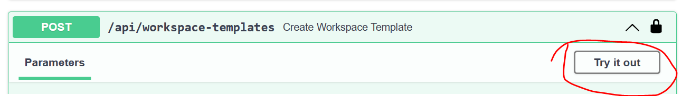

Registering Workspace Templates
To deploy a new type of Workspace, we need to register a Workspace Template using the API.
Porter Bundles
Porter bundles can either be registered interactively using the Swagger UI or automatically using the utility script (useful in CI/CD scenarios). The script is provided at /devops/scripts/publish_register_bundle.sh.
The script can also be used to generate the payload required by the API without actually calling the API. The script carries out the following actions:
- Publishes the bundle to the Azure Container Registry specified.
- Extracts the parameters from the bundle using
porter explain.
Registration using Swagger UI
-
We will use the utility script to generate the payload. The script needs to be executed from within the bundle directory, for example
/templates/workspaces/azureml_devtestlabs/. This script can be used as follows:Copy the resulting payload json.../../../devops/scripts/publish_register_bundle.sh -r <acr_name> -i -t workspace -
Navigate to the Swagger UI at
/docs - Log into the Swagger UI by clicking
Authorize, thenAuthorizeagain. You will be redirected to the login page. -
Once logged in. Click
Try it outon thePOST/api/workspace-templatesoperation:
-
Paste the payload json generated earlier into the
Request bodyfield, then clickExecute. Review the server response. - To verify registration of the template do
GEToperation on/api/workspace-templates. The name of the template should now be listed.
Registration using script
To use the script to automatically register the template, a user that does not require an interactive login must be created as per the e2e test user documentation here.
The script needs to be executed from within the bundle directory, for example /templates/workspaces/azureml_devtestlabs/.
This script can be used as follows:
Usage: ../../../devops/scripts/publish_register_bundle.sh [-u --tre_url] [-c --current] [-i --insecure]
Options:
-r, --acr-name Azure Container Registry Name
-t, --bundle-type Bundle type, workspace
-c, --current: Make this the currently deployed version of this template
-i, --insecure: Bypass SSL certificate checks
-u, --tre_url: URL for the TRE (required for automatic registration)
-a, --access-token Azure access token to automatically post to the API (required for automatic registration)
In addition to generating the payload, the script posts the payload to the /api/workspace-templates endpoint. Once registered the template can be retrieved by a GET operation on /api/workspace-templates.
Tip
Follow the same procedure to register workspace service templates and user resource templates